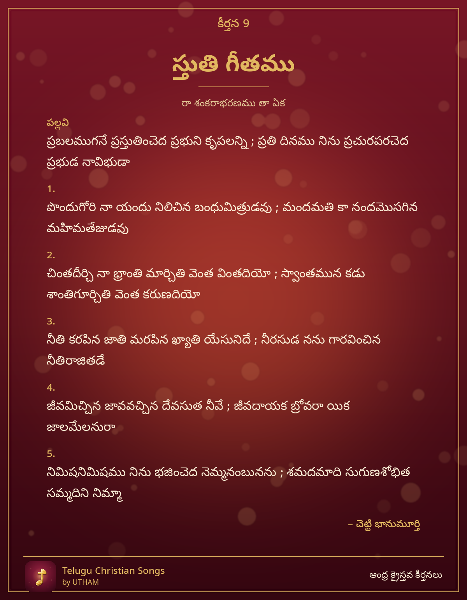

కీర్తన 9 – స్తుతి గీతము

Stuti Geetamu – prabalamugane prastutimcheda prabhuni krupalanni ; prati dinamu
పల్లవి (Pallavi)
ప్రబలముగనే ప్రస్తుతించెద ప్రభుని కృపలన్ని ; ప్రతి దినము నిను ప్రచురపరచెద ప్రభుడ నావిభుడా
చరణం 1
పొందుగోరి నా యందు నిలిచిన బంధుమిత్రుడవు ; మందమతి కా నందమొసగిన మహిమతేజుడవు
చరణం 2
చింతదీర్చి నా భ్రాంతి మార్చితి వెంత వింతదియో ; స్వాంతమున కడు శాంతిగూర్చితి వెంత కరుణదియో
చరణం 3
నీతి కరపిన జాతి మరపిన ఖ్యాతి యేసునిదే ; నీరసుడ నను గారవించిన నీతిరాజితడే
చరణం 4
జీవమిచ్చిన జావవచ్చిన దేవసుత నీవే ; జీవదాయక బ్రోవరా యిక జాలమేలనురా
చరణం 5
నిమిషనిమిషము నిను భజించెద నెమ్మనంబునను ; శమదమాది సుగుణశోభిత సమ్మదిని నిమ్మా
– చెట్టి భానుమూర్తి